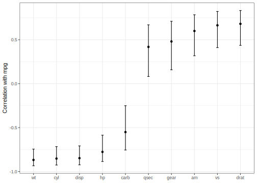

This assignment is ungraded. I encourage you to review the problems to see if (1) you know how to do them or (2) if you know how to google how to do it. If either path forward escapes you, I suggest that you complete this assignment.
Accept the invitation to GitHub Classroom here. Commit your work as you go along.
Exercise 7.2.3 from Data Science for Public Policy. Data can be found here.
sale_df <- read_csv("https://raw.githubusercontent.com/DataScienceForPublicPolicy/diys/main/data/home_sales_nyc.csv")
ggplot(data = sale_df, aes(x = gross.square.feet, y = sale.price)) +
geom_point(alpha = 0.15,
size = 1.2,
colour = "blue") +
scale_x_continuous("Property size (gross square feet)", labels = scales::comma) +
scale_y_continuous("Sale price (USD)", labels = scales::comma)
reg_est <- lm(sale.price ~ gross.square.feet, data = sale_df)
summary(reg_est)Reproduce this figure from tidymodels 3.3  with the data from Part 1 replacing mpg with sale price for numeric variables.
corr_res <- map(sale_df %>% select(where(is.numeric), -c(sale.price, borough, zip.code)), cor.test, y=sale_df$sale.price)
corr_res %>%
map_dfr(broom::tidy, .id = "predictor") %>%
ggplot(aes(x = fct_reorder(predictor, estimate))) +
geom_point(aes(y = estimate)) +
geom_errorbar(aes(ymin = conf.low, ymax = conf.high), width = .1) +
labs(x = NULL, y = "Correlation with sale price") +
theme_bw() +
coord_flip()Exercise 7.4.5
Estimate a set of regressions, evaluate the pros and cons of each, and select the “best” specification.
Create and analyze the following four models from the textbook and one of your own:
library(gridExtra)
# Simple regression
mod1 <- lm(sale.price ~ gross.square.feet,
data = sale_df)
# With borough
mod2 <- lm(sale.price ~ gross.square.feet + factor(borough),
data = sale_df)
# Interaction
mod3 <- lm(sale.price ~ gross.square.feet * factor(borough),
data = sale_df)
# With Additional variables
mod4 <-
lm(sale.price ~ gross.square.feet * factor(borough) + land.square.feet + age,
data = sale_df)
sale_df <- sale_df %>% mutate(quarter = lubridate::floor_date(sale.date, 'quarter'))
mod5 <- lm(sale.price ~ gross.square.feet * factor(borough) + land.square.feet + age + factor(quarter),
data = sale_df)
#Base
base1 <-
ggplot(sale_df, aes(x = gross.square.feet, y = sale.price / 1000000)) +
geom_point(colour = rgb(0, 0, 0, 0.1), size = 0.8) +
geom_point(
aes(x = sale_df$gross.square.feet, y = predict(mod1) / 1000000),
colour = rgb(1, 0, 0, 0.2),
size = 0.6
) +
xlab("Gross Square Feet") + ylab("Sales Price ($MM)") +
ggtitle(paste0("Model 1 (BIC = ", round(BIC(mod1)), ")")) +
xlim(0, 3000) + ylim(0, 3)
#Base2
base2 <-
ggplot(sale_df, aes(x = gross.square.feet, y = sale.price / 1000000)) +
geom_point(colour = rgb(0, 0, 0, 0.1), size = 0.8) +
geom_point(
aes(x = sale_df$gross.square.feet, y = predict(mod2) / 1000000),
colour = rgb(1, 0, 0, 0.2),
size = 0.6
) +
xlab("Gross Square Feet") + ylab("Sales Price ($MM)") +
ggtitle(paste0("Model 2 (BIC = ", round(BIC(mod2)), ")")) +
xlim(0, 3000) + ylim(0, 3)
#Base3
base3 <-
ggplot(sale_df, aes(x = gross.square.feet, y = sale.price / 1000000)) +
geom_point(colour = rgb(0, 0, 0, 0.1), size = 0.8) +
geom_point(
aes(x = sale_df$gross.square.feet, y = predict(mod3) / 1000000),
colour = rgb(1, 0, 0, 0.2),
size = 0.6
) +
xlab("Gross Square Feet") + ylab("Sales Price ($MM)") +
ggtitle(paste0("Model 3 (BIC = ", round(BIC(mod3)), ")")) +
xlim(0, 3000) + ylim(0, 3)
#Base4
base4 <-
ggplot(sale_df, aes(x = gross.square.feet, y = sale.price / 1000000)) +
geom_point(colour = rgb(0, 0, 0, 0.1), size = 0.8) +
geom_point(
aes(x = sale_df$gross.square.feet, y = predict(mod4) / 1000000),
colour = rgb(1, 0, 0, 0.2),
size = 0.6
) +
xlab("Gross Square Feet") + ylab("Sales Price ($MM)") +
ggtitle(paste0("Model 4 (BIC = ", round(BIC(mod4)), ")")) +
xlim(0, 3000) + ylim(0, 3)
grid.arrange(base1, base2, base3, base4, ncol = 2)
broom::glance(mod5)
broom::tidy(mod5)In the class divvy example (see the lectures page for code/files), we had a lot of missing values in our data. We also didn’t have a very rigorous treatment of time/seasonality. Explore how impactful these issues are by creating a few different models and comparing the predictions using the workflows we saw from class in parsnip, yardstick, and broom.
divvy_data <- read_csv('https://github.com/erhla/pa470spring2022/raw/main/static/lectures/week_3_data.csv')
grouped <- rsample::initial_split(divvy_data)
train <- training(grouped)
test <- testing(grouped)
lm_model <-
parsnip::linear_reg() %>%
set_engine("lm") %>%
set_mode('regression') %>%
fit(rides ~ solar_rad + factor(hour(started_hour)) +
factor(wday(started_hour)) +
factor(month(started_hour)) +
temp + wind + interval_rain + avg_speed, data=train)
preds <-
predict(lm_model, test %>% filter(month(started_hour) >= 5))
test_preds <- lm_model %>%
augment(test %>% filter(month(started_hour) >=5))
yardstick::mape(test_preds,
truth = rides,
estimate = .pred)
yardstick::rmse(test_preds,
truth = rides,
estimate = .pred)
ggplot(test_preds, aes(x=.pred)) +
geom_density()divvy_data <- divvy_data %>%
mutate(
day = floor_date(started_hour, 'day'),
bad_weather = if_else(solar_rad <= 5 & temp <= 5, 1, 0),
nice_weather = if_else(solar_rad >= 25 & temp >= 15, 1, 0)
)
total_rain <- divvy_data %>% group_by(
day
) %>% summarize(total_precip = sum(interval_rain, na.rm=T))
divvy_data <- divvy_data %>% left_join(total_rain) %>%
mutate(rainy_weather = if_else(total_precip > 0, 1, 0))
grouped <- rsample::initial_split(divvy_data)
train <- training(grouped)
test <- testing(grouped)
lm_model <-
parsnip::linear_reg() %>%
set_engine("lm") %>%
fit(rides ~ solar_rad + factor(hour(started_hour)) +
factor(nice_weather) + factor(bad_weather) + factor(rainy_weather) +
temp + avg_speed, data=train)
preds <-
predict(lm_model, test %>% filter(month(started_hour) >= 5))
test_preds <- lm_model %>%
augment(test %>% filter(month(started_hour) >=5))
yardstick::mape(test_preds,
truth = rides,
estimate = .pred)
yardstick::rmse(test_preds,
truth = rides,
estimate = .pred)
ggplot(test_preds, aes(x=.pred)) +
geom_density()